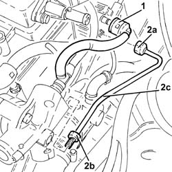
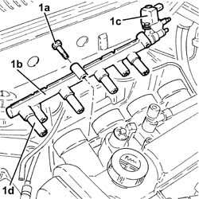
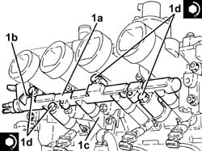
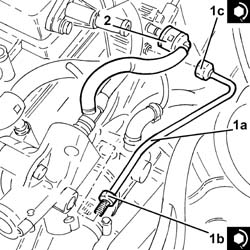

1056F60 SINGLE FUEL MANIFOLD PIPE, complete with injectors - R.R.
- Path
- Procedures > 10 ENGINE UNIT > 1056 PETROL INJECTION SYSTEM > 1056F DIRECT PETROL INJECTION SYSTEM > 1056F60 SINGLE FUEL MANIFOLD PIPE, complete with injectors - R.R.
- Kind
- repair procedure (removal / refitting; the operation number is the code)
- Applies to
- engines: 2.0 JTS; all production periods
- Interactive page
- https://sloeber94.github.io/elrnDB-aGt/en/#/2923161
Applies to: engines: 2.0 JTS; all production periods
 Removing
Removing
 Refitting
RefittingPosition the vehicle on the ramp
DRAIN THE FUEL HIGH-PRESSURE SYSTEM AS DESCRIBED BELOW.
Start engine.
Maintain idle for 2 minutes.
Remove the fuel pump relay.
Wait for the engine to stall.
Try to start the engine: if the engine starts within 10 seconds, wait for it to stall, then try to start it again; if the engine does not start withiin 10 seconds, continue cranking for a further 5 seconds.
Wait until the engine cools down.
Proceed with removal - 1016A40 ignition coil cover on cylinder head- r+r
Proceed with removal - 7055B54 under-engine guard - r r
Proceed with removal - 1076B18 rigid section of exhaust pipe between catalytic converter and silencer - r + r
Proceed with removal - 1048A59 PIPE from flow meter to throttle casing hose - R.R.
Proceed with removal - 5530B10 battery - r+r
Proceed with removal - 1072D10 modular inlet manifold - r+r
1. Disconnect the rapid attachment for the fuel bypass pipe, fuel manifold side.
2. Undo the connectors (2a), (2b) and remove the high-pressure pipe from the pump to the fuel manifold (2c).

Applies to: engines: 2.0 JTS; all production periods
1. Undo the bolts (1a) and remove the fuel manifold (1b) complete with fuel pressure regulator (1c) and connectors (1d) for the fuel injectors.

Applies to: engines: 2.0 JTS; all production periods
Refitting
Removing1. Refit the fuel manifold (1a) complete with fuel pressure regulator (1b) and injector connectors (1c), then tighten the relevant bolts (1d) to the specified torque.
 | Fastening | Component | Ø | Value (daNm) |
|---|---|---|---|---|
1d | Bolt | FUEL MANIFOLD | M9 | (Intake manifold side) 3.9 ÷ 4.7 |

Applies to: engines: 2.0 JTS; all production periods
1. Refit in its seating a new high-pressure pipe from the pump to the fuel manifold (1a) and tighten the connectors (1b) and (1c) to the specified torque.
| Fastening | Component | Ø | Value (daNm) |
|---|---|---|---|---|
1b | Connector | FUEL HIGH PRESSURE PIPE | M10 | (High pressure pump side 16 20 |
| Fastening | Component | Ø | Value (daNm) |
|---|---|---|---|---|
1c | Connector | FUEL HIGH PRESSURE PIPE | M12 | (Fuel manifold pipe side) 2.0 ÷ 2.4 |
2. Connect the rapid attachment for the fuel bypass pipe, fuel manifold side.

Applies to: engines: 2.0 JTS; all production periods
Proceed with refitting - 1072D10 modular inlet manifold - r+r .
Proceed with refitting - 5530B10 battery - r+r .
Proceed with refitting - 1048A59 PIPE from flow meter to throttle casing hose - R.R. .
Proceed with refitting - 1076B18 rigid section of exhaust pipe between catalytic converter and silencer - r + r .
Proceed with refitting - 7055B54 under-engine guard - r r .
Proceed with refitting - 1016A40 ignition coil cover on cylinder head- r+r .
Remove the car from the ramps.